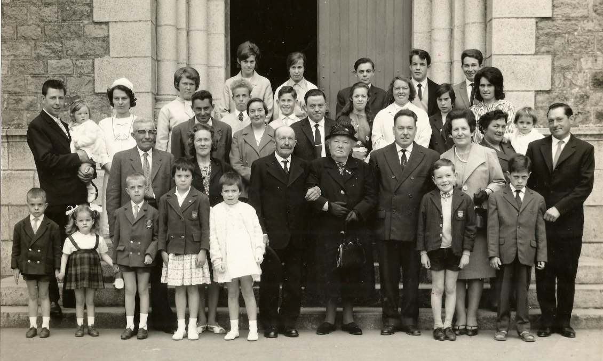
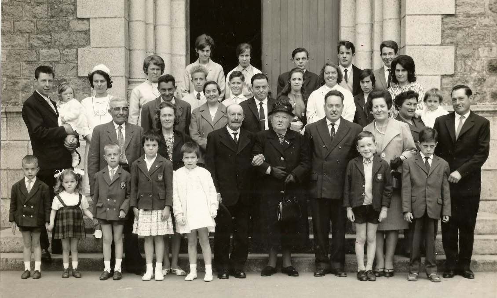
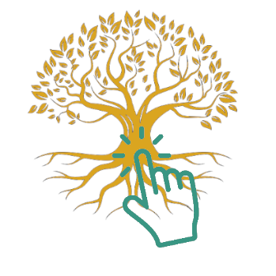

Noces d'Or
Eglise St Louis Paimboeuf Loire Atlantique (23 mai 1964)
 
the texte a deplacer

the texte a deplacer
Henri Edelin et Clémentine Goislard
50 ans jour pour jour après leur mariage, ici en présence de leurs enfants, petits-enfants et arrière-petite-fille
en ferme au bord de Loire,
retrouvait trop souvent
du Saumon au repas,
à cette époque il était très abondant !
Par contre, elle adorait le crabe tourteau.
Filiation descendante d'Henri Edelin et Clémentine Goislard au 23 mai 1964
Origines géographiques des aïeux d'Henri Edelin jusqu'au début du XVIIIe siècle
Origines géographiques des aïeux de Clémentine Goislard jusqu'au début du XVIIIe siècle

L'arbre Généalogique de la famille EDELIN-GOISLARD est déposé sur Geneanet.org
